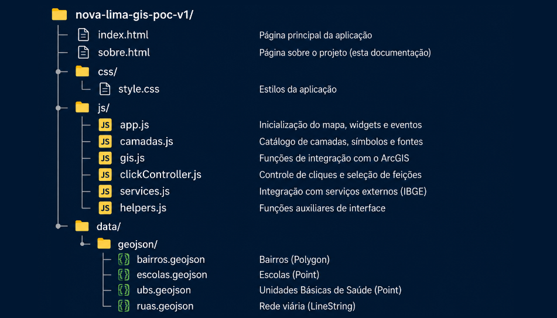

Nova Lima SIG - V2
Aplicação SIG municipal desenvolvida com JavaScript puro, ArcGIS Maps SDK for JavaScript e dados geográficos em GeoJSON.
Voltar para o mapaVisão geral
O Nova Lima SIG é uma aplicação de Sistema de Informação Geográfica voltada à visualização e análise territorial do município de Nova Lima/MG.
O projeto começou como uma Prova de Conceito, mas evoluiu para uma base mais estruturada de aplicação SIG, com camadas temáticas, painel lateral customizado, análise espacial por bairro, seleção visual de feições, cálculo de distâncias e identificação de serviços públicos próximos.
Objetivo do projeto
O objetivo principal é construir uma aplicação SIG municipal de forma incremental, organizada e didática, explorando conceitos de geoprocessamento, arquitetura de software e boas práticas de JavaScript sem o uso de frameworks.
Mais do que exibir um mapa, a aplicação busca demonstrar como dados espaciais podem apoiar a leitura do território, a análise de cobertura de serviços públicos e a tomada de decisão municipal.
Conceitos de SIG explorados
- Representação vetorial de dados geográficos.
- Geometrias do tipo Point, LineString e Polygon.
- Camadas geográficas temáticas.
- Feições geográficas e seus atributos.
- Uso do formato GeoJSON.
- Sistema de referência espacial WGS84 / WKID 4326.
- Seleção visual de feições no mapa.
- Consultas espaciais com geometryEngine.contains().
- Interseção espacial com geometryEngine.intersects().
- Cálculo de extensão de ruas com geometryEngine.geodesicLength().
- Cálculo de recurso mais próximo.
- Distância geodésica entre bairro e equipamento público.
- Uso de camadas temporárias para seleção e análise.
Recursos técnicos utilizados
- HTML5.
- CSS3.
- JavaScript puro.
- ArcGIS Maps SDK for JavaScript 4.x.
- MapView.
- GraphicsLayer.
- GeoJSONLayer.
- Graphic.
- geometryEngine.
- LayerList.
- Legend.
- BasemapGallery.
- Search Widget.
- API pública do IBGE.
Arquitetura da aplicação
A aplicação foi organizada com separação clara de responsabilidades, evitando concentrar toda a lógica em um único arquivo.
app.js
Orquestra a aplicação, inicializa o mapa, cria a view, registra widgets, adiciona camadas e configura os principais eventos.
camadas.js
Funciona como catálogo de camadas, concentrando títulos, símbolos, fontes GeoJSON, símbolos de seleção e templates de exibição.
gis.js
Contém funções de integração com o ArcGIS, carregamento de GeoJSON, seleção visual, destaque de recursos, limpeza de seleção e desenho de análises temporárias no mapa.
clickController.js
Centraliza a lógica de clique no mapa, identifica a camada clicada, executa análises espaciais por bairro e aciona os renderizadores do painel.
painelRenderer.js
Responsável pela montagem do HTML do painel lateral, incluindo painéis individuais de recursos, painel de bairro, cards de serviços e seções de serviços próximos.
helpers.js
Reúne funções auxiliares, incluindo cálculo de recurso mais próximo e apoio à formatação de informações.
services.js
Responsável por integrações externas, como a consulta à API pública do IBGE.
Estrutura do Projeto
A figura abaixo apresenta a organização de pastas da aplicação e a responsabilidade dos principais módulos implementados.

Camadas implementadas
- Limite municipal: carregado a partir da API pública do IBGE.
- Bairros: camada local em GeoJSON com geometria Polygon.
- Ruas: camada local em GeoJSON com geometria LineString.
- Escolas: camada local em GeoJSON com geometria Point.
- UBS: camada local em GeoJSON com geometria Point.
- Coleta seletiva: camada local em GeoJSON com geometria Point.
- Creches: camada local em GeoJSON com geometria Point.
Funcionalidades atuais
- Visualização do município de Nova Lima/MG.
- Carregamento de camadas locais em GeoJSON.
- Exibição de bairros, ruas, escolas, UBS, coleta seletiva e creches.
- Painel lateral customizado para informações.
- Popup padrão do ArcGIS controlado conforme estado do painel.
- Seleção visual de feições com camada própria de destaque.
- Separação entre camada de seleção e camada de análise.
- Consulta de serviços públicos existentes dentro de cada bairro.
- Identificação de serviços mais próximos quando o bairro não possui determinado recurso.
- Desenho de linha tracejada entre bairro e serviço mais próximo.
- Exibição da distância geodésica entre bairro e recurso.
- Cálculo da quantidade de ruas por bairro.
- Cálculo da extensão aproximada da rede viária por bairro.
- Uso de ícones personalizados por tipo de equipamento público.
- Controle de camadas com LayerList.
- Legenda automática com Legend.
- Busca geográfica com Search Widget.
Camadas temporárias
highlightLayer
Camada dedicada ao destaque visual da feição selecionada. Ela permite que o recurso ativo apareça acima das demais camadas sem alterar o gráfico original.
analysisLayer
Camada dedicada às análises temporárias, como linhas de conexão, rótulos de distância e futuras representações de buffer, rotas ou áreas de influência.
Aprendizados principais
- Como estruturar uma aplicação SIG sem framework.
- Como separar responsabilidades entre arquivos JavaScript.
- Como representar diferentes tipos de geometria no ArcGIS.
- Como transformar GeoJSON em Graphics do ArcGIS.
- Como trabalhar com seleção e destaque de feições.
- Como organizar um catálogo de camadas reutilizável.
- Como usar consultas espaciais para relacionar bairros e equipamentos públicos.
- Como calcular distâncias e extensões geodésicas.
- Como separar camadas permanentes, seleção visual e análises temporárias.
- Como evoluir uma POC para uma base mais próxima de uma aplicação SIG profissional.
Limitações atuais
- As camadas locais ainda são mockadas.
- A aplicação ainda não utiliza FeatureServer.
- Não há persistência de dados.
- Os dados ainda não representam uma base oficial completa do município.
- As análises espaciais ainda são introdutórias.
- A inclusão de novas camadas ainda exige alterações manuais em vários arquivos.
Próximos passos
- Explorar buffers e áreas de influência.
- Criar filtros por camada e por tipo de recurso.
- Adicionar estatísticas por regional.
- Consumir serviços ArcGIS REST.
- Trabalhar com FeatureLayer e FeatureServer.
- Adicionar dados reais e oficiais ao projeto.
- Automatizar o processo de inclusão de novas camadas temáticas.
- Criar análises espaciais mais avançadas.
- Evoluir a aplicação para uma arquitetura ainda mais modular.
Autor
Jurandir Antonio de Oliveira
Projeto desenvolvido como estudo prático de SIG, ArcGIS Maps SDK for JavaScript, arquitetura de software e aplicações geográficas municipais.
Data: Julho de 2026